Platform
Some additional notes
-
- evaluation https://docs.smith.langchain.com/concepts/evaluation . This along with Hamel husain is pretty good.
-
There is often 1 right way to do basic things (JD)
-
one vendor for summarisation
- one vector database
- one way to get structured output and validation
-
etc.
-
Karpathy notes on Apple via tweet 11/06/24 Actually, really liked the Apple Intelligence announcement. It must be a very exciting time at Apple as they layer AI on top of the entire OS. A few of the major themes.
-Step 1 Multimodal I/O. Enable text/audio/image/video capability, both read and write. These are the native human APIs, so to speak. -Step 2 Agentic. Allow all parts of the OS and apps to inter-operate via "function calling"; kernel process LLM that can schedule and coordinate work across them given user queries. -Step 3 Frictionless. Fully integrate these features in a highly frictionless, fast, "always on", and contextual way. No going around copy pasting information, prompt engineering, or etc. Adapt the UI accordingly. -Step 4 Initiative. Don't perform a task given a prompt, anticipate the prompt, suggest, initiate. -Step 5 Delegation hierarchy. Move as much intelligence as you can on device (Apple Silicon very helpful and well-suited), but allow optional dispatch of work to cloud. -Step 6 Modularity. Allow the OS to access and support an entire and growing ecosystem of LLMs (e.g. ChatGPT announcement). -Step 7 Privacy. <3
-We're quickly heading into a world where you can open up your phone and just say stuff. It talks back and it knows you. And it just works. Super exciting and as a user, quite looking forward to it.
- Ideation as a product for the platform team
- do a survey to assess/baseline ideation. Can also go directly to people. Ask LLM to help me create questions.
- market intelligence report include RAG on company Readytech as context in data
- extract messages
- Evaluation is c
Innovations are adopted quickly if they are easy to make, easy to use, fit existing patterns, and have visible results. Generative AI has abruptly changed the innovation landscape by accelerating the utility and availability of AI products and services.
While the vast majority of consumers and companies do not make technology, they are actively searching for value in this space. Consequently, technology companies are trying to implement AI features that create value for their customers as fast as possible.
The long tail of B2B SaaS companies has a unique set of challenges. Many of these companies have enterprise client traction and skilled development teams but lack extra capital and in-house AI/ML resources, making it hard to bootstrap production grade AI capabilities and features.
Some additional talks to incorporate
- genAI deserves a platform team
-
https://www.madrona.com/the-rise-of-ai-agent-infrastructure/
Goals
A dedicated platform team helps B2B SaaS companies stay competitive by quickly matching competitors' advances and meeting client expectations for new experiences.
This team drives innovation, positions the company as a leader in AI, and reduces risk by providing systemic infrastructure and resources to prevent project failures.
It specifically helps:
- Product teams launch AI features
- Business teams automate workflows
- Leaders unify AI strategy, standards and voice
- Managers make data-driven decisions
- Clients adopt third-party AI products
- Staff upskill AI literacy and fluency
Ultimately, platform teams shape organisational culture, ensuring that responsibility and enthusiasm for AI are shared by everyone, not just a small group of evangelists.
Good platform teams function as skunkworks, rapid execution engines, and guardrails, ensuring the company quickly and safely integrates AI across all operations in order to benefit clients and establish AI leadership amongst competitors.
Ideas
When bootstrapping platform teams, only speed and outcomes matter. Fast, cheap value creation determines whether platforms continue or are killed off because resources are limited, track records nonexistent and executive patience is thin.
Platform teams must act for all functions and departments in a B2B SaaS company. They should tackle cross disciplinary needs - at least product, design and engineering to start with - and champion fairness - equitable platform access to all products - as foundational principles for success.
Focusing on both technical tooling and service delivery is important, as the latter reduces early bottlenecks the most. In this environment, prioritisation is king and selecting the correct set of valuable and feasible initiatives to iterate on and build company confidence is crucial.
Platform teams empower executives with a robust reporting framework that simplifies tracking, optimises resource allocation, and sharpens decision-making regarding AI initiatives.
Goal 1 : Help product teams launch AI features
| KPI | Bottleneck | Actions |
|---|---|---|
| Write PRD in 1 day | Lack of competitor awareness and AI expertise slows opportunity identification | 1. Searchable, updated competitor and client database of AI features 2. Custom GPT for rapid ideation and document formatting |
| Develop prototype in 1 week | Lack of tooling slows conversion from idea to PoC | 1. Curated, ready-to-go notebooks with composable components and pipelines to bootstrap a project 2. [Optional] Buy a low/no-code service to help non-engineers prototype |
| Create pitch in 1 day; Approval decision in 1 hour | Lack of standard templates, explicit criteria and quick feedback slows generation and evaluation | 1. AI-powered templates to auto-construct pitches and provide instant feedback for human editing 2. Automated evaluation reports and pipelines to expedite committee approval 3. Access to platform team experts for direct consultation and recommendations |
| Build AI feature in 6 weeks | Setting up infrastructure, experimenting, and applying advanced techniques takes too much time | 1. Maintain a quick-start list of managed services infrastructure for zero friction project setup and deployment 2. Provide an out-of-the-box observability platform for automatic monitoring and evaluations 3. Abstract technical infrastructure, design patterns and best practices around advanced features like RAG, Fine Tuning, Agent, Multimodal 4. Synthetic data pipelines for bootstrapping teams working with confidential data 5. Dedicated platform resources (e.g. engineers, designer) pairing with product teams to accelerate delivery 6. Provide UI/UX reviews, advice, starter Figma web components or AI design systems informed by best practices 7. Maintain a risk and safety register for the feature informed by AI best practices and frameworks |
| Compliance check in 1 day | Staying updated with regulatory frameworks, assessing their impact on product features, and preparing external documents is time-consuming | 1. Maintain a searchable, updated compliance directory to track and update local, state, national, and international regulatory frameworks 2. Use RAG-based rubric evaluation for feature compliance 3. Automated drafting of approval request letters to appropriate stakeholders |
| GTM in 1 week | Lack of marketing resources and inconsistent AI messaging across teams delays launches | 1. Automate release notes 2. Draft user documents pack, including how-to guides and support FAQs 3. Generate draft marketing messages, collateral and standard company templates/assets |
| Post-Launch Maintenance for 3 months | Maintaining AI features post-launch is resource-intensive, requiring continuous monitoring and a different approach for generative AI's probabilistic nature | 1. Dedicated hypercare by AI platform team to handle bugs, fixes and updates for 3 months post launch 2. Set up automated monitoring systems to track AI performance and detect issues early 3. Providing a BAU service request model for ongoing/complex issues |
Wartime
We need a wartime platform squad to stay ahead. Wartime squads move fast, cut red tape, and prioritise impact. They focus on speed and value, driving the company forward by launching AI features quickly. Leaders make tough calls to keep projects on track.
This team works seamlessly with product and business teams, enabling them and ruthlessly prioritising the best ideas. They eliminate bureaucracy, integrate new AI tools swiftly, and handle issues head-on. They ensure compliance and safety standards are met without slowing down progress.
Unlike peacetime squads that maintain stability, wartime squads thrive in urgency. They deliver immediate results and keep the company ahead of competitors. Quick decisions and a relentless focus on outcomes make them essential for AI leadership and rapid innovation.
FAQ
Role, Responsibilities, and Collaboration
Q: What is the primary role of the AI platform team in a B2B SaaS company?
A: The AI platform team's main role is to integrate AI across products and services quickly, support product teams, and speed up AI feature releases.
Q: How does the AI platform team help business teams automate workflows?
A: The platform team implements AI tools for automation, trains business teams, and integrates AI solutions into existing workflows.
Q: How does the platform team handle both innovation and BAU (Business As Usual) tasks simultaneously?
A: The platform team manages both by dedicating 70% of their resources to innovation and 30% to BAU tasks. Given the newness of the platform team, this balance might shift as the environment and products mature, allowing for adjustments based on evolving needs and priorities.
Q: What is the role of the AI platform team in shaping organizational culture?
A: The platform team fosters a culture of AI innovation and responsibility, encouraging AI fluency and enthusiasm across the organization through training and collaboration.
Q: Do AI platform teams lack the domain knowledge of specific products, making them unsuitable substitutes for product-specific engineering teams?
A: Yes, AI platform teams lack product-specific knowledge. They're support, not a substitute. To fix this, have the platform team act as a drop-in task force during critical phases, integrating AI while the product squad provides domain expertise. Alternatively, second selected product engineers from a squad to the platform team for a brief period - e.g. six weeks - to share domain knowledge and tailor AI solutions effectively.
Q: What kind of support does the platform team offer during the prototyping phase?
A: The platform team provides ready-to-use notebooks, components, managed services, and optional low/no-code tools to help non-engineers prototype quickly.
Q: How does the platform team facilitate collaboration with third-party AI vendors?
A: The platform team vets and integrates third-party AI services, provides documentation, and works with product teams to ensure seamless integration.
Q: What happens if product teams don’t cooperate with the platform team, or vice versa?
A: The platform team is an optional enabler, offering a range of services as needed. For approved projects with embedded engineers, cooperation is mandatory and ensured through formal agreements endorsed by managers and executives. These agreements include clear requirements, conditions, SLAs, and deliverables, ensuring alignment and accountability, which are critical for achieving company and user outcomes.
Q: Will product engineers miss out on learning AI if platform engineers handle the builds, and will knowledge leave with them?
A: No. Platform engineers work closely with product teams, provide hands-on training, and keep detailed documentation. Product engineers involved in builds will teach their squad, ensuring everyone learns and retains AI skills.
Q: If I don't get approved to work with the platform team, does my AI journey end?
A: No. You can still use self-service tools, resources, and training from the platform team. Product teams keep decision-making autonomy and can build AI features on their own. Approved projects get embedded engineers and time-bound support, but this doesn't remove always-available features or limit reapplying for more support.
Metrics and Success
Q: How do we measure the platform team's success?
A: We use practical metrics: time-to-market for AI features, the number of successful AI launches, user feedback, and AI feature funnel conversion from ideas to approved projects. This ensures our efforts provide real benefits to users and improve company results.
Q: How is the success of the AI platform team incentivized and rewarded?
A: Success is measured by AI launches and user feedback. Rewards include performance bonuses, public recognition, and career advancement opportunities.
Q: How do we measure the success of the AI features?
A: The product team tracks user adoption, feedback, performance, and ROI. The platform team helps with tools for monitoring, synthetic data, and risk management. They also provide training, support, and regular reviews to ensure AI features deliver real value and meet business goals.
Compliance and Security
Q: How does the platform team ensure compliance with AI regulations?
A: The platform team maintains a compliance directory, uses a RAG-based rubric for evaluations, and automates approval request letters to meet regulatory standards.
Q: How does the platform team handle data privacy and security concerns?
A: The platform team enforces strict data privacy protocols, uses synthetic data for confidential information, and maintains a risk and safety register.
Risk Management
Q: How does the platform team approach risk management for AI features?
A: The platform team manages risks by maintaining a risk register, using feature flags, setting up rollback procedures, and conducting thorough testing.
Q: What if there's a critical issue post-launch that the product team or platform team can't handle?
A: We build AI features with feature flags, allowing us to disable them if needed. The platform team maintains a risk and safety register and ensures quick rollback provisions at the code level. If a critical issue arises that the product team or platform team can't manage, we activate existing mechanisms for P1 incidents, including customer communications by senior engineers, managers, and support teams.
Resource Management and Challenges
Q: What are the main challenges the platform team might face, and how do they address them?
A: The platform team faces challenges like limited resources and cross-department collaboration, which they address through prioritization, continuous learning, and clear communication.
Q: What if the platform team has too many critical projects to work on?
A: Managers and executives decide which projects to prioritize, based on the platform team's advice. We have a set ratio of resources to projects to manage capacity. This way, the most critical work gets done first.
Q: How do we handle the risk of burnout and ensure sustainability if the platform team is constantly working in high-pressure sprints?
A: The platform team operates in a high-pressure environment with a clear mission to accelerate AI feature launches. To manage burnout, we maintain a 70-30 split between innovation and BAU tasks, and rotate team members between high-intensity projects and less demanding tasks. We recruit team members with this demanding mission in mind from the outset, ensuring they are prepared for the challenges and committed to delivering high performance.
Continuous Improvement and Maintenance
Q: In what ways does the platform team accelerate the AI feature development process?
A: The platform team speeds up development by providing managed infrastructure, observability tools, design patterns, dedicated support, and task automation.
Q: What steps does the platform team take for post-launch support and maintenance of AI features?
A: Post-launch, the platform team provides three months of hypercare, automated monitoring, and a BAU service request model to keep AI features running smoothly.
Q: What happens if there's a V2 feature idea after launch and hypercare?
A: If a V2 feature idea arises post-launch and hypercare, it goes back through the standard stage gates. For already launched products, we have an accelerated stage gate process. Due to resource limits, product teams can also proceed independently or use a day expertise consultancy model outside of the six-week drop-in period for additional support.
Part of the role is buy versus build The list below sequences and categorises a core set of ideas for new platform teams to tackle.
- deal desk rubric to select projects, cst hem etc.
- probabilistic software infrastructure
=> smallest AI feature is 2 weeks. largest is like 8 weeks. => war room approach => there is a hypercare phase => one potential missing part is how to long term support/ongoing maintenance. How will the teams themselves support BAU. => Don;t think there is a way to avoid upskilling => How to understandt the metrics. What to do if someting goes wrong. "We can't do this because the team can't support it" There's no avoiding having to upskill. We need 200 AI engineers not 5.
=> really good to focus on material benefit => saves hours of time. Change the perception that it's not just new technology. We can't afford not to have.
- Build AI feature in 6 weeks
- observability tooling
- shared AI services
- wrapper around LLm calls, observability etc. for free
- abstract technical infra around advanced features e.g. RAG
- provide the ability to code bespoke features using best available tooling -> e.g. easy access to python and best available libraries
- AI infrastructure and tooling as a service
Josh's Ideas
- What would be timeline for a new feature. What would a sprint look like? What is the capacity of the team
- Some govt and justice product needs an AI feature
- do advanced AI stuff without needing a yearlong project
- What would you need to do to enable a team to enable the most simple thing like a summarisation feature => do we need an experimentation capability
- automatic evaluation
- what models to use
- what metrics to have
- observability platform
- take Admissions approach and generalise it
-
How would you take it and generalise it ?
-
data sovereignty - map n data privacy issues
- techniques for passing secure endpoints. clear understanding of what goes where. privacy guarantees
- if you had a understanding of privacy constraints you could map that - technical infrastructure and techniques
- tools and assistance on working with synthetic data how to make sure it is reliable and some tooling
- centralising tooling is a difficult problem to solve
- advanced techniques available to a product regardless of expertise
- really good framework to reduce the costs of LLMs => can document that, write up actual code
-
benefit of centralising AI expertise
-
An over all evaluation rubric
- making it more suited to a regular machine learning workflow
- prioritise teams that are already doing something
? what about talking to customer.
Still have a gap where they are looking to update the infrastructure. When they want to generate these documents => might require some complicated RAG.
- making sure that centralising anything doesn't squash action. If a team has an idea they want to do that, they are not going to do that they are going to get there alot faster. Ties into a technical strategy => Needs a faster way to spin up services. Have a separate SRE team. Set up a separate service so that it is isolated and we don't have to worry about existing infrastructure that is secure and authenticated and everytim you have to come up with a new service. consult with the SRE team to do this. put up something serverless. 95% of AI use cases have similar infrastructure needs, a container, serverless etc. Need buy-in from the SRE team.
=> peacetime vs wartime companies => table for different sort of approaches. Wartime company might be a startup moving to an IPO, made me think that AI stuff is wartime stuff and a wartime scenario. Will be adopted by whoever is in the market first.
Trends
As platform teams mature, the following are a list of key trends to keep in mind.
- Dramatic cost reductions are expected along with increased capital allocation as an ongoing part of budgets (e.g. OpenAI costs reduction)
- Generational change in user behaviour as it comes to agentic/avataric applications
- New revenue streams from AI products
- Boring, high value use cases in automation will proliferate
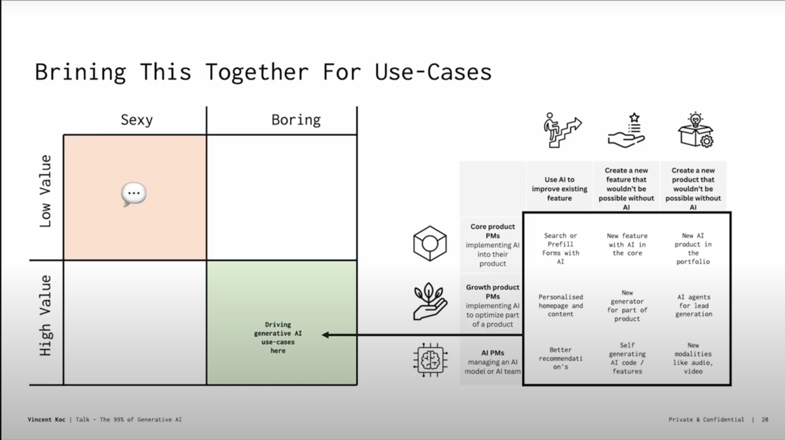
- AI Agents Impact:
- Changing task unit economy.
Machine Users Classification
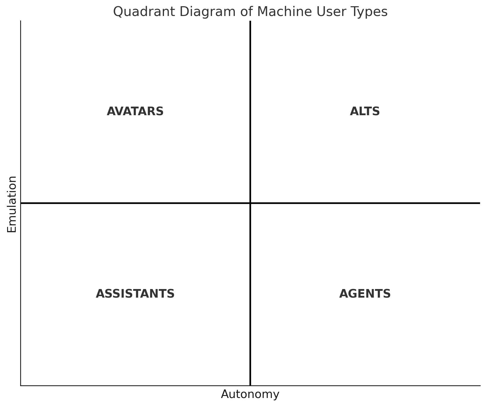
https://www.linkedin.com/pulse/how-do-you-market-fridge-algorithm-whisperer-timo-elliott-7xhhe/?trackingId=zAu8gTg6%2FuIHcK5OK6zOsA%3D%3D
External Resources
- Prefect: See Prefect for a nice implementation of task and flow primitives.
- Critic Framework for Agent Reflection: Critic Framework.
- Coala Framework for Agents: Coala Framework.
- Pipedream: Check out Pipedream for a nice workflow UI and Zapier-like utility.
- Interesting Takes on UI: Ink & Switch.
- TEQSA Links: Higher Education Good Practice Hub.
- Marvin Minsky Article on AI Steps: AI Steps.
-
AI Design Patterns: Patterns 1, Patterns 2.
-
Our competitors are moving ahead of the curve.
- Our clients are moving ahead of the curve and their expectations are high, especially educators.
- Aligns with our mission.
- Established emerging practices: Examples of what works in AI.
- Textbook machine learning engineering: 86% of data projects fail due to missing data infrastructure and lack of support for a machine learning workstyle (see mlebook.com by Josh Cooper).
- Antifragile needs a team for rolling with the waves.
- Prepared to switch approaches and providers early.
-
- Most people trust peer reviews over scientific studies.
Classification
- Decision Complexity: Capability for making decisions, from basic to advanced.
- Relational Dynamics: Level of interaction with the environment or humans.
Quadrants
- Twins: Advanced simulations with complex decisions and dynamic interactions.
- Avatars: Digital representations with meaningful interactions but limited decision-making.
- Bots: Perform automated, repetitive tasks with minimal interaction.
- Agents: Perform complex tasks autonomously with limited interaction.
Misclassification Examples
- Automated News Reader: A bot due to lack of interactivity despite human-like speech.
- Virtual Museum Guide: An agent if it follows a script without engaging with visitors' questions.
Education Strategy / Edtech
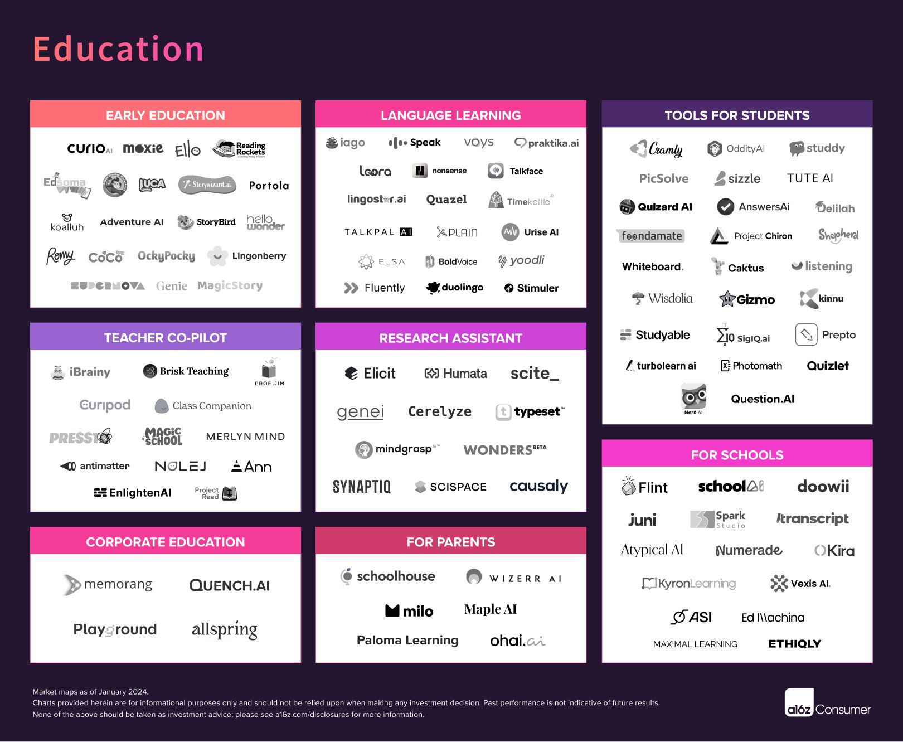
Key Features
- Multimodal ability.
- New interfaces.
- Consumer first, B2B.
- Hyper-specialized products.
Companies to Consider
| Company | Description |
|---|---|
| Sizzle AI | Multimodal, step-by-step tutor |
| Curio | Toys come to life |
| Magic School | AI assistant for educators |
| Iago | Learn Japanese while watching anime |
| Edsoma | AI reading assistant |
| Bed Fables | Create children's stories with AI |
| Matchbooks AI | Create children's stories with AI |
| StoryWizard AI | Create children's stories with AI |
| Koaluh | Create children's stories with AI |
| StoryBird AI | Create children's stories with AI |
| Coco | Co-create creative projects with kids |
| Pratika | Language learning |
| Lingostar | Language learning |
| Timekettle | Translation hardware |
| TalkPal | Language learning |
| Elsa | Language learning |
| BoldVoice | Language learning |
| Yoodli | Language/Communication learning |
| Fluently | Multilingual writing |
| Stimuler | Language/Communication learning |
| Cramly | Study tutor |
| Studdy | Study tutor |
| Foondamate | Study tutor |
| Chiron | Math education |
| Whiteboard AI | Study aid |
| Gizmo | Study aid |
| Wizdolia | Study aid |
| Caktus | Study aid |
| Kinnu | Study aid |
| Quizlet | Study aid |
| Elicit | Research |
| Humata | Research |
| Scite | Research |
| Genei | Research |
| Cerelyze | Research |
| Typeset | Writing |
| MindGrasp | Study aid |
| Wonders | Research |
| Synaptiq | Study aid for medicine |
| Typeset Science | Research |
| Causaly | Research |
| Brisk Teaching | Teaching aid |
| ProfJim | Teaching aid |
| Curipod | Teaching aid |
| Class Companion | Teaching aid |
| Pressto | Teaching aid |
| Merlyn Mind | Teaching agents |
| Nolej | Teaching aid |
| Memorang | AI platform |
| Quench | Turn content into copilot |
| Flintk12 | School platform |
| SchoolAI | School platform |
| Atypical | No idea what this does |
| Kira | Contract review |
| Vexis | Grading |
| SparkStudio | Language learning |
| Edmachina | Retention AI |
| Radius | Admissions |
| Extra Edge | Marketing and admissions |
| Enrol ML | Admissions |
| Admit Yogi | Admissions |
| College Advisor | Admissions |
Employee Substitute Companies
| Company | Description |
|---|---|
| Cognition Labs | Software engineer |
| Version Lens | Product manager |
| Magic | Software engineer |
| TextQL | Data scientist |
| Fluent | Data analyst |
| Mindy | Chief of staff |
| Ema | Universal employee |
| Finpilot | Financial analyst |
| Rogo | Financial analyst |
| Norm AI | Compliance |
| Arini | Receptionist |
| Casca | Loan officer |
| Runnr | Hotel concierge |
| Sevn | Designer |
| Sierra | Customer support |
| Rasa | Customer support |
Approach
- Get it working.
- Get it right.
- Get it to scale.
Source: Make It Work, Make It Right, Make It Fast.
- comfort with autonomy is also a thing that is unclear for now because users take time to get adjusted to this.
AI Platform
- A central platform and service that helps product teams launch AI features in under 8 weeks.
- A central platform and service that helps internal business teams automate workflows
- A central platform and service that helps unify the company's AI voice and establish its presence externally in the edtech market as an AI leader
- A consultancy service that helps our clients experiment with and implement AI features in under 8 weeks
Why do this
- our competitors are moving ahead of the curve
- our clients are moving ahead of the curve and their expectations are high => educators going ahead of the curve
- our mission
- what are the established emerging practices => examples of what works
- textbook machine learning engineering => 86% of Data projects => Why do machine learning projects fail
- missing data infrastructure
- specifically mentions lack of support for a machine learning workstyle => mlebook.com Josh Cooper has a section
- antifragile needs a team for rolling with the waves.
- prepared to swith. approaches and providers early.
Prefect
See -> https://www.prefect.io/ for a nice implementation of task and flow primitives
Critic framework for agent reflection : https://arxiv.org/abs/2305.11738
Coala framework for agents : https://arxiv.org/abs/2309.02427
Dead internet theory says that internet is just bots. Gen AI can accelerate this. Full of stochastic content of no value. And further full of scams. The idea that search will keep up is laughable.
Thoughts
- focus on how to implement in organisations
- B2B > B2C
- deep dive into edtech
- deep dive into workflows?
- involve wardley maps.
- I like SamboNova
Pipedream
Check out pipedream for a nice workflow UI and Zapier like utility
interesting takes on UI
https://www.inkandswitch.com/
TEQSA Links
https://www.teqsa.gov.au/guides-resources/higher-education-good-practice-hub/artificial-intelligence
=> also look at National AI Centre
Maybe I can start with a collection of predictions then base my view on that?
THen I can move on to examples
Marvin Minsky Article on AI steps
https://courses.csail.mit.edu/6.803/pdf/steps.pdf
Strategy and Mental Models that are useful
Vincent Koc
 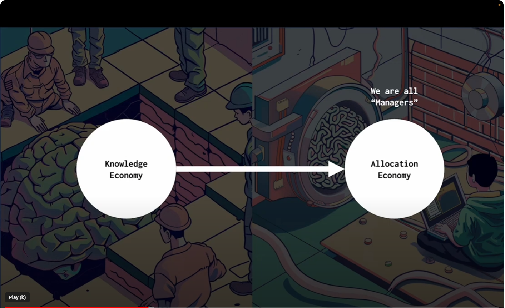
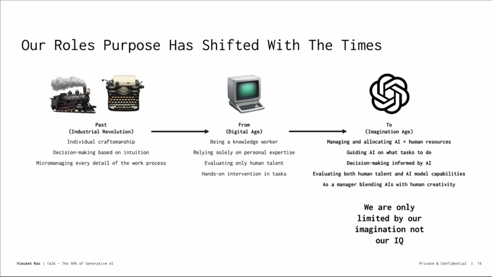
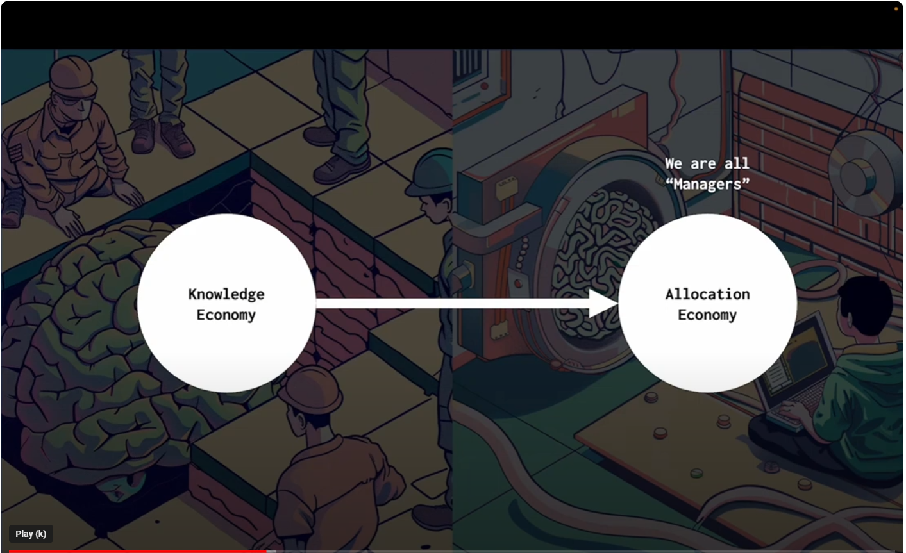
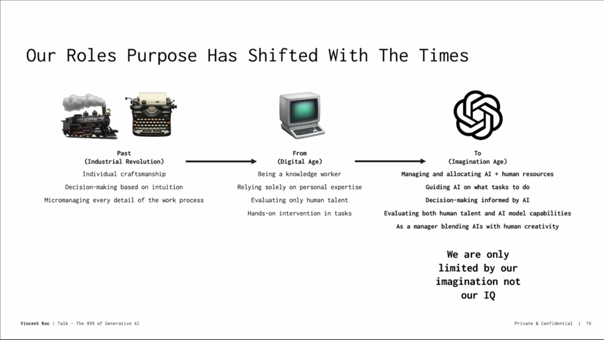

- above by vicent koc. I have the slides on my gmail via a youtube video.
- he also notes that cost is not an issue as in 2023 alone costs have reduced by 35x for OpenAI
-
also notes an anecdote about how a generation is growing up (kid on a train telling ok Alexa stop this) expecting agentic/avataric assistants around to assist with everything. Modern tooling.
-
I was interested to explore Everett rogers diffusion of innovation theories
- machine futures and emerging tech
- one at the end creates a whole new revenue stream
- coolest new one is generating the part of product including us on demand product is building itself as you goes
Chief Data Scientist at Domain
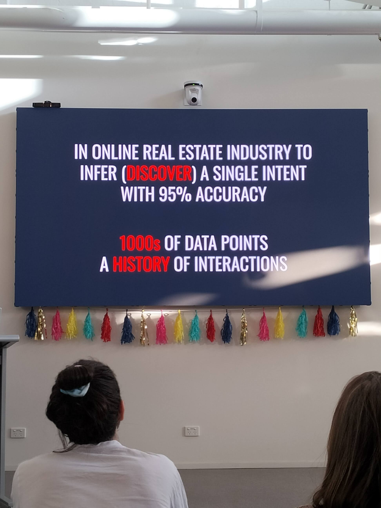
 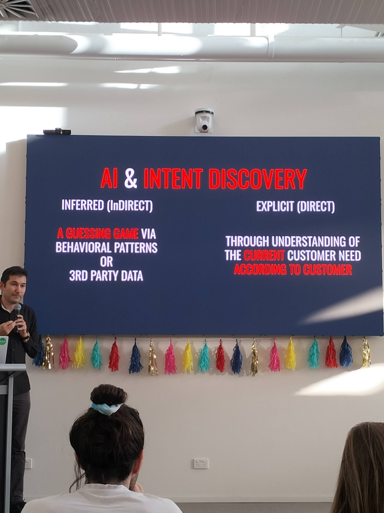
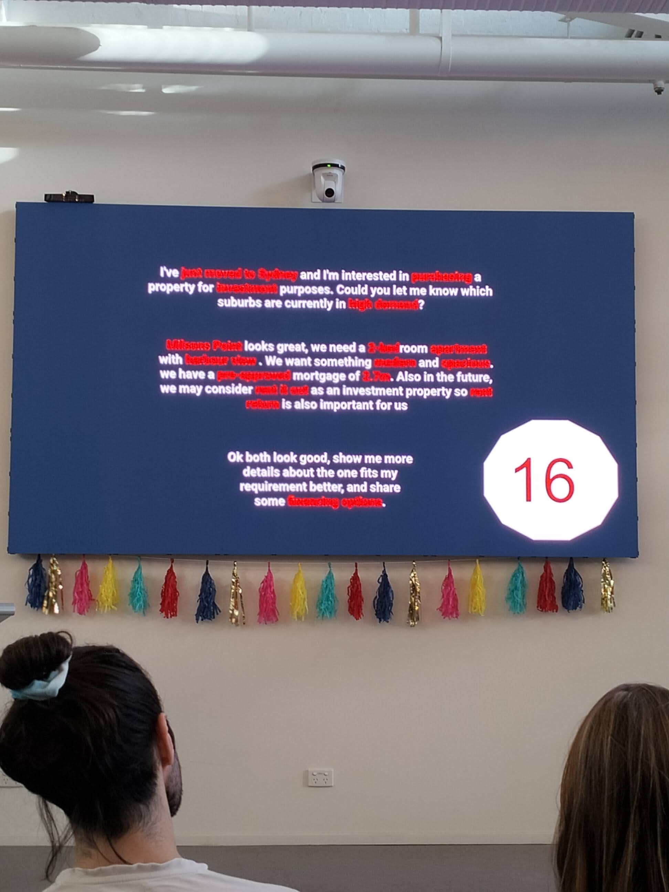
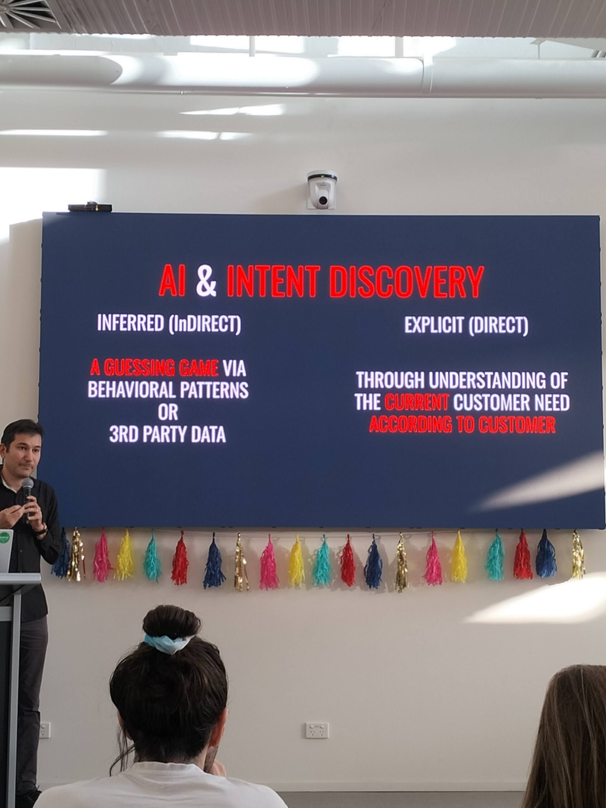
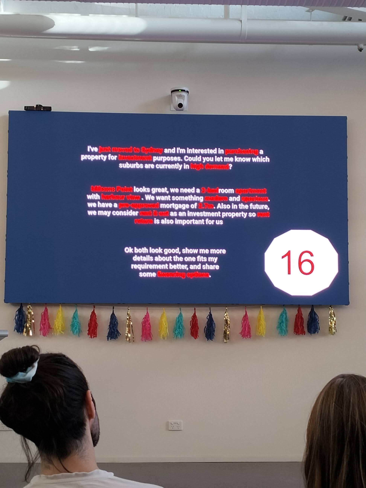
- this interaction for investment property took 1 minute
- 16 intents captured in 60 seconds in 1 interaction of 1 minute
- what about businesses that only have access to one customer they can now leverage ai
- brand is tied to transparency and safety
- a new industry is going to be formed around AI safety like cybersecurity
AI Jason from relevance
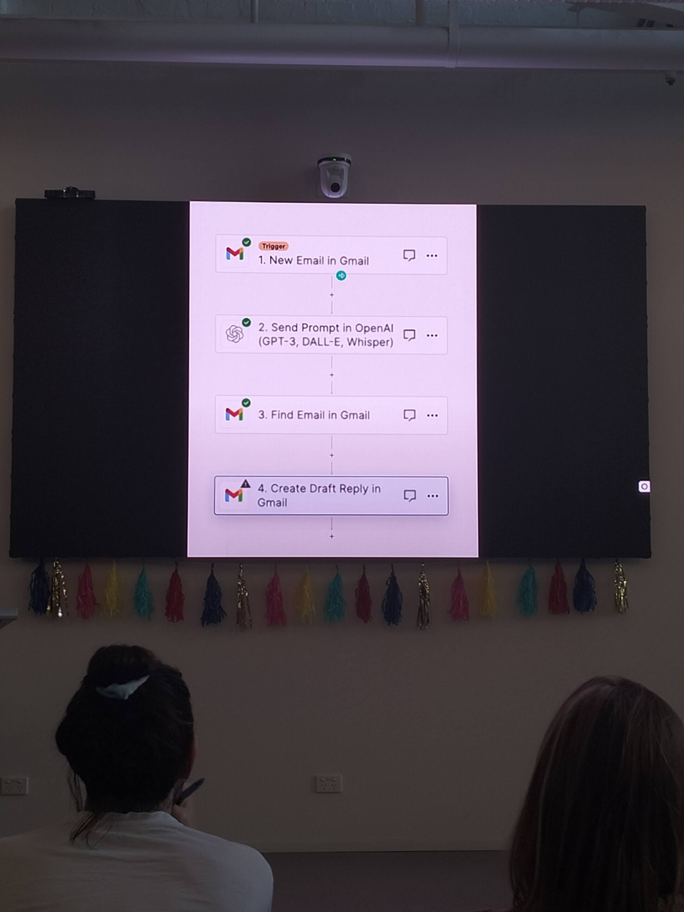
 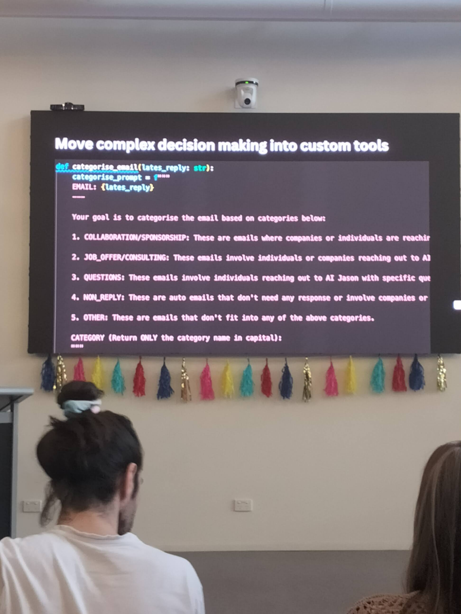
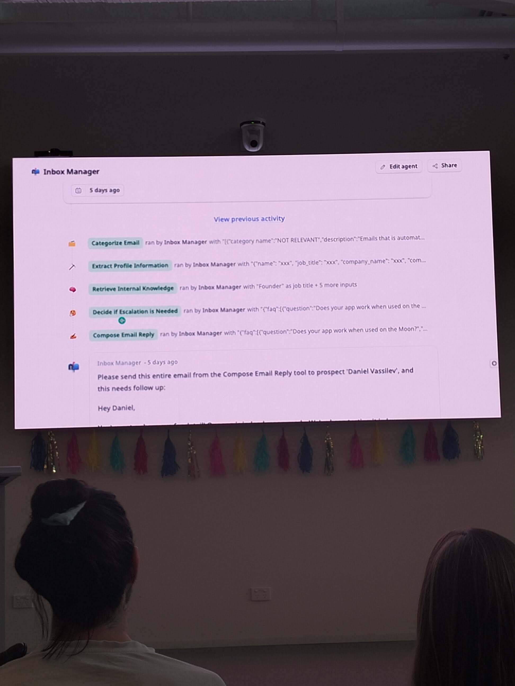
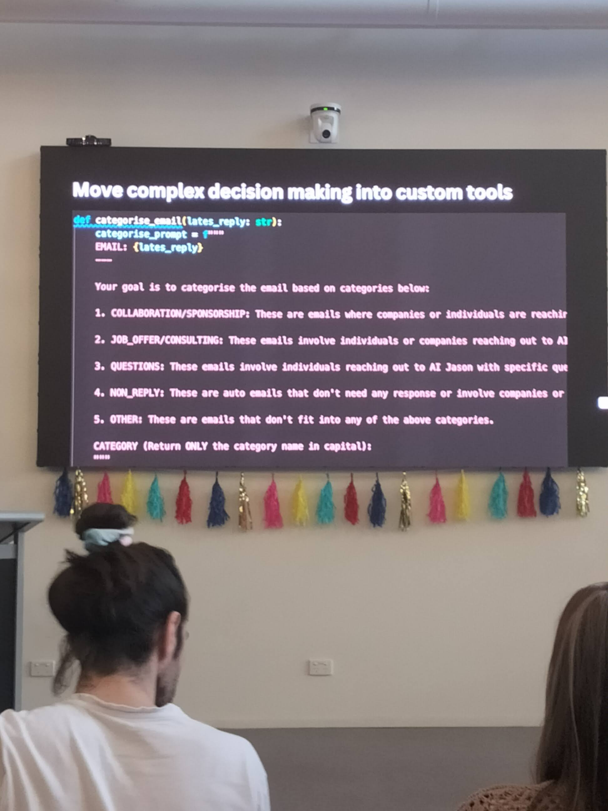
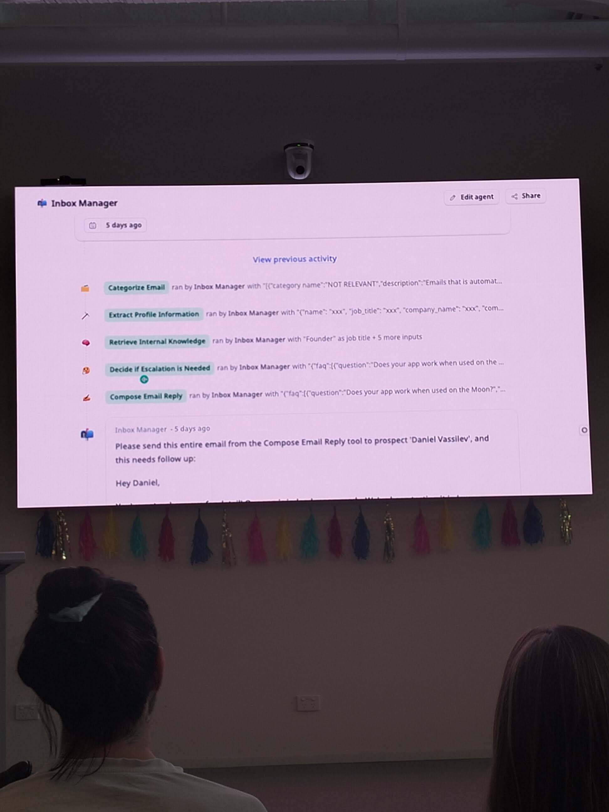
- AI Agents change task unit economy
AI Design Patterns
Various things
- Avatars vs agents. Avatars create connections and are an investment, building a moat which induces switching costs that are not felt by impersonal transactional agents. I.e. an Avatar assistant is less replacable than an agent assistant
A machine user is an AI or software entity that performs tasks within digital environments or interacts with humans. These entities can range from simple automated programs to complex systems capable of emulating human decision-making and interaction.
Machine users are pivotal in today's digital landscape, serving a multitude of purposes across various industries. Their abilities span from executing repetitive tasks to engaging in dynamic, human-like interactions. Understanding the distinct types of machine users helps in harnessing their capabilities for improved efficiency, engagement, and innovation.
The classification is based on:
- Decision Complexity: Reflects the machine user's capability for making decisions, ranging from basic algorithm-driven choices to advanced, context-aware problem-solving.
- Relational Dynamics: Represents the level of interaction the machine user has with its environment or with humans, from simple responses to complex, engaging conversations.
Quadrants
Quadrant I: Twins
These are advanced simulations of real-world systems or processes that can make complex decisions and interact dynamically with their environment.
- Healthcare Digital Twin: Adapts treatment plans based on real-time health data.
- Smart City Digital Twin: Manages urban environments by integrating diverse data sources.
Quadrant II: Avatars
Digital representations that interact with users or environments in a meaningful way but are limited in decision-making complexity.
- Virtual Customer Service Representative: Guides customers through online retail stores.
- Educational Virtual Tutor: Assists students on e-learning platforms.
Quadrant III: Bots
Software programs designed to perform automated tasks, usually repetitive and with minimal interaction.
- Chatbot for Hotel Bookings: Manages room bookings and customer queries.
- Social Media Content Moderator Bot: Flags inappropriate content based on set guidelines.
Quadrant IV: Agents
These systems perform complex tasks autonomously but with limited interaction, focusing on efficiency and execution.
- Algorithmic Trading Agent: Executes stock trades based on market analysis.
- Autonomous Industrial Robot: Performs complex tasks in manufacturing with minimal human interaction.
Classification
In this section, we dive deeper into a few complex machine user examples to clarify their categorization:
-
Autonomous Negotiating Car: A self-driving car that negotiates with smart parking lots for space would be classified as a Twin, due to its high decision complexity in real-time and its high relational dynamics in engaging with the parking infrastructure.
-
Self-Restocking Fridge: A refrigerator that monitors inventory and orders groceries when supplies run low would fall under Agents. While it autonomously manages its inventory (high decision complexity), its interactions are limited to transactional ordering processes (low relational dynamics).
-
AI Legal Advisor: An AI that provides legal advice by analyzing case law and statutes would be an Agent. It requires a high level of decision complexity to interpret and apply legal principles but generally does not engage in complex interactions as its advice is typically delivered in a report format.
-
Interactive Fictional Character: In an immersive storytelling platform, this AI character interacts with users, making choices that influence the story. Its decision-making might appear complex, but it's primarily designed to emulate a character within a narrative context, categorizing it as an avatar.
Understanding the capabilities and interactions of machine users is critical for businesses and developers as they integrate AI into their operations and products. This classification helps in strategizing the deployment of AI systems for optimal performance and user experience.
Misclassification
For a machine user to be classified as an Avatar, it must exhibit both role emulation and interactivity. Role emulation involves the machine user mimicking or representing a human role, behavior, or persona, often in a digital or virtual environment. Interactivity refers to the machine user's capability to engage in dynamic, two-way interactions, often resembling human-like conversations or social behaviors.
-
Automated News Reader: Imagine an AI that reads out news articles in a human-like voice. While it might seem like an avatar due to its human-like speech (role emulation), it lacks interactive capabilities. The AI does not engage in two-way communication; it simply performs a one-way broadcast of information. This absence of interactivity classifies it more accurately as a Bot, as it's primarily executing a defined, repetitive task without the dynamic engagement typical of avatars.
-
Virtual Museum Guide: Consider an AI that provides guided tours in a virtual museum. If this AI simply follows a predetermined path and script without engaging with visitors' questions or personalizing the tour based on visitor interactions, it would be an Agent rather than an Avatar. Despite emulating the role of a tour guide (role emulation), the lack of real-time, responsive interaction with visitors means it doesn't fully meet the criteria for an Avatar.
Even when a process utilises advanced technologies like Large Language Models (LLMs), it can still be classified as a Bot. This classification hinges on the task's nature and the level of decision complexity and interactivity, rather than the sophistication of the technology used.
- Task Specificity: If the primary role is executing predefined, often repetitive tasks such as data generation or answering standard queries, it aligns with the bot's characteristic functionality.
-
Limited Interactivity: Bots typically exhibit restricted interactive capabilities. A process using LLMs but not engaging in dynamic, responsive dialogues fits this category.
-
Decision Scope: The use of LLMs does not automatically imply complex decision-making. If decisions are based on set rules or parameters, despite the advanced nature of the technology, the process is akin to a bot's operation.
Example: An LLM-driven chatbot for customer service, offering scripted responses to inquiries, demonstrates this concept. Despite its advanced underlying technology, its role in providing specific information without complex interactions or autonomous decision-making categorizes it as a "Bot."
In essence, the application and function of the technology, rather than its inherent complexity, determine a machine user's classification.
Education Strategy / Edtech
Source : https://x.com/zachcohen25/status/1757497529523110191?s=20
4 key features
- Multimodal ability
- New interfaces
- Consumer first, B2B
- Hyper-specialised products
Various companies in this space to consider
Consumer First General companies worth looking into : https://gamma.app/docs/a16z-Consumer-Abundance-Agenda-ieotbnzbxj81biu?mode=doc
| Company | Description |
|---|---|
| Sizzle AI | Multimodal, step by step tutor |
| Curio | Toys come to life |
| Magic School | AI assistant for educators |
| Iago | Learn Japanese while watching anime |
| [Edsoma] (https://www.edsoma.com/) | AI reading assistant |
| [Bed Fables] (https://www.bedfables.com/) | Create children's stories with AI |
| [Matchbooks AI] (https://matchbooks.ai/) | Create children's stories with AI |
| StoryWizard AI | Create children's stories with AI |
| Koaluh | Create children's stories with AI |
| StoryBird AI | Create children's stories with AI |
| Coco | Co-create creative projects with kids |
| Pratika | Language Learning |
| Lingostar | Language Learning |
| Timekettle | Translation hardware |
| TalkPal | Language learning |
| Elsa | Language learning |
| BoldVoice | Language Learning |
| Yoodli | Language/Communication Learning |
| Fluently | Multilingual writing |
| Stimuler | Language/Communication learning |
| Cramly | Study tutor |
| Studdy | Study tutor |
| Foondamate | Study tutor |
| Chiron | Math education |
| Whiteboard AI | Study Aid |
| Gizmo | Study Aid |
| Wizdolia | Study Aid |
| Caktus | Study Aid |
| Kinnu | Study Aid |
| Quizlet | Study Aid |
| Elicit | Research |
| Humata | Research |
| Scite | Research |
| Genei | Research |
| Cerelyze | Research |
| Typeset | Writing |
| MindGrasp | Study Aid |
| Wonders | Research |
| Synaptiq | Study Aid for Medicine |
| Typeset Science | Research |
| Causaly | Research |
| Brisk Teaching | Teaching Aid |
| ProfJim | Teaching Aid |
| Curipod | Teaching Aid |
| Class Companion | Teaching Aid |
| Pressto | Teaching Aid |
| Merlyn Mind | Teaching Agents |
| Nolej | Teaching Aid |
| Memorang | AI platform |
| Quench | Turn content into copilot |
| Flintk12 | School platform |
| SchoolAI | School platform |
| Atypical | No idea what this does |
| Kira | Contract review |
| Vexis | Grading |
| SparkStudio | Language Learning |
| Edmachina | Retention AI |
| I have a bunch of admissions edtech in Confluence | |
| Radius | Admissions |
| Extra Edge | Marketing and Admissions |
| Enrol ML | Admissions |
| Admit Yogi | Admissions |
| College Advisor | Admissions |
Employee substitute companies
| Company | Description |
|---|---|
| Cognition Labs | Software Engineer |
| Version Lens | Product Manager |
| Magic | Software Engineer |
| TextQL | Data Scientist |
| Fluent | Data Analyst |
| Mindy | Chief of Staff |
| Ema | Universal Employee |
| Finpilot | Financial Analyst |
| Rogo | Financial Analyst |
| Norm AI | Compliance |
| Arini | Receptionist |
| Casca | Loan Officer |
| Runnr | Hotel Concierge |
| Sevn | Designer |
| Sierra | Customer Support |
| Rasa | Customer Support |
If agents can help product managers architect and orchestrate workflows that result in faster, cheaper and better quality outcomes, then, depending on the scale of the improvement different opportunities open up.
- slight improvements lead to more productive PMs
- large improvements lead to changes in PM skillsets and labour force compositions (the jury is still out) and the move from "No" to "Yes" (https://x.com/clairevo/status/1774451083622191400?s=20)
- enormous improvements lead to a reshaping of the technology and productivity landscape with the rise of machine users
Approach
- Get it working
- Get it right
- Get it to scale
https://wiki.c2.com/?MakeItWorkMakeItRightMakeItFast